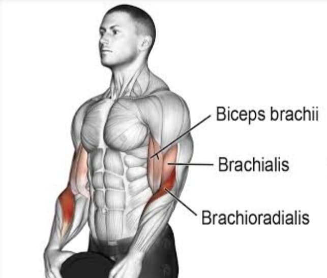
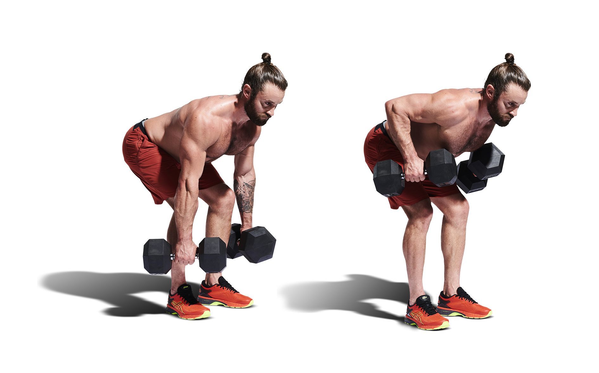
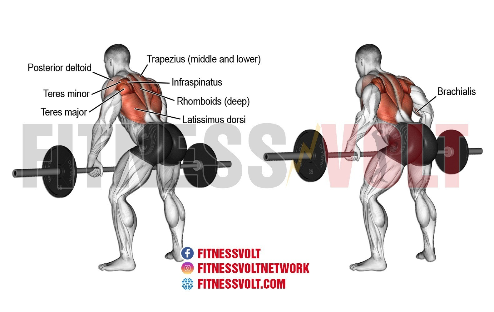
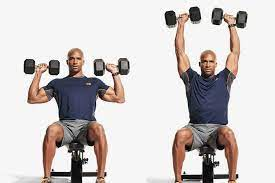
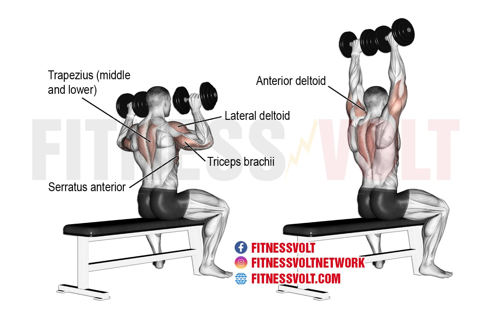

BICEP CURLS:
How do you do them?

Start by holding a dumbbell with your palm facing upward, either with one arm or both. Slowly curl
the weight up by bending your elbow,
keeping your elbow close to your body. Then slowly lower the weight to the starting position, then
repeat as necessary.
What muscles do they target?

They target the specific muscles located at the front of your arms called; biceps brachii, brachialis
and brachioradialis.
BENT OVER ROWS:
How do you do them?

Stand holding a barbell with your palms facing up. You can do this movement with both arms or just
one, whilst using the other hand to lean on a bench for support. Bend your knees slightly and hinge
at the hips, extending your hips till behind your heels. Keeping your back straight, and elbows
close to your body,
row the barbell towards your chest, squeezing your back muscles. Slowly lower to the starting
position, then repeat as necessary.
What muscles do they target?

The bent over row primarily works the latissimus dorsi (the large wing-like muscles in your back),
the middle and lower trapezius, the rhomboids, and the posterior deltoids.
DUMBBELL SHOULDER PRESS:
How do you do them?

Hold a dumbbell in each hand at your shoulders with your palms facing forward and your elbows bent.
This is the starting position. Press the dumbbells overhead, straightening your elbows
completely. Make sure to keep your core engaged and hips tucked to avoid arching your lower back
as you lift your arms.
This movement can be performed standing or seated. If done seated, press your back right up against
the seat.
What muscles do they target?

This exercise targets the front portion of your shoulder muscle (anterior deltoid) but you'll also
be working out your deltoids, triceps, trapezius and pecs.